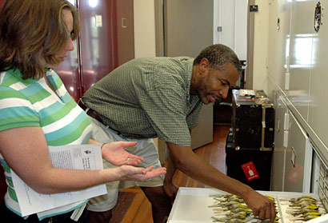
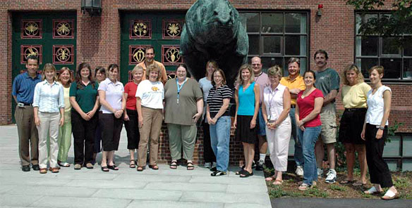

News Archives : 2006 : Summer Outreach Program for Teachers Focuses on Evolution
by Susan Johnson
August 3, 2006

High School teacher Tammy Due and OEB professor Scott Edwards
"This program would be a tremendous model for other universities to participate in. The impact on high school science teaching would be incredible!" – Beth Mick
"The speakers are stimulating. I really enjoyed the workshop because learning new information helps keep my teaching fresh." – Donna Browne
"The sharing of ideas and the dialogue that we have here tends to be the kind that we desire within our schools but rarely find." – Tammy Due
"I really enjoy learning about new research in the context of creating a new curriculum. So much of this stuff didn’t exist when we were in college." – Jim Dixon
These remarks reflect the enthusiasm of the high school biology teachers who participated in this summer’s Life Sciences-HHMI Outreach Program. Eighteen teachers from Massachusetts, New Hampshire, Maine, Rhode Island, and Mississippi gathered to update their knowledge, create new curricula, and forge new collegial relationships. This year’s program focused on evolution, because of its high public profile and controversial nature in school communities. MCB and OEB faculty, and guests from outside the Harvard community, came together to underscore the importance of evolution to research in molecular, cellular, and organismal biology.
MCB Department Chair Dr. Andrew Murray commended the interdisciplinary nature of the Outreach Program, quoting founder of population genetics, Theodosius Dobzhansky, "‘In biology, nothing makes sense, except in the light of evolution.’" Dr. Murray continued, "As we sequence and decipher the genomes of more and more organisms, this statement applies with ever increasing strength to the work of molecular and cellular biologists. As it does so, the divide between evolutionary and molecular biology (which led to the fission of the Biology Department in 1967) begins to crumble, and a growing community of evolutionary biologists spans MCB and OEB."
In his introductory talk to participants, Dr. Murray discussed the importance of evolution to cancer research. He emphasized that while almost all cells in the human body sacrifice their own fitness for the greater good of the organism, cancer cells are only interested in their own self-proliferation. In this sense, cancer cells are selected for the ability to invade tissues and metastasize. Dr. Murray proposed that since small changes in DNA could lead to profound changes in cell behavior, "it shouldn’t be hard to imagine that small changes could also lead to new species."
The following day Dr. Scott Edwards, Professor of Organismic and Evolutionary Biology, and Curator of Ornithology at the Museum of Comparative Zoology (MCZ), gave a talk entitled "DNA and the Evolution of Birds." He demonstrated how the analysis of nuclear and mitochondrial DNA provides evolutionary biologists with powerful phylogenetic tools. Dr. Edwards also explained the controversial genomic technique of looking for large patterns of nucleotides across genomes to show relationships between groups of birds. He led teachers on a tour of the extensive bird collection at the MCZ; teachers were amazed by the diversity of the collection and the historical specimens collected by Alfred Russell Wallace (a Welsh naturalist, geographer, anthropologist, and biologist) on his legendary expedition.
Finally, Dr. Robert Lue, Senior Lecturer on Molecular and Cellular Biology, and Director of Life Sciences Education, spoke about the origin and evolution of the HIV virus. He discussed the ease with which HIV generates new strains that resist treatment protocols, and how the rapid evolution of HIV, when faced with the human immune system, has serious implications for human populations. The teachers then participated in a bioinformatics workshop, and generated phylogenetic trees showing the relationship between strains of HIV and SIV (simian immunodeficiency virus).
The second week of the Outreach Program began with the lecture "Evolutionary Conflicts in Pregnancy" by Dr. David Haig, Professor of Biology in OEB. Dr. Haig focused on the tug-of-war between the opposing genetic interests of maternal cells and fetal cells; this gave teachers new ways of looking at complications in pregnancy, such as miscarriage and gestational diabetes. Claire Reardon, Laboratory Manager of the Bauer Center for Genomics Research, guided teachers on a tour of the Center. She explained how microarrays were made, addressing a variety of applications for the technology, from determining differences in gene expression between tissue types, to mining for clues about behaviors in African cichlid fishes. The workshop’s component on evolution and current research concluded with a lecture by Dr. Ron Etter, Instructor in the Harvard Summer School, and Professor of Biology at UMASS/Boston. Dr. Etter spoke about macro- and microevolution, the controversy around gradualism, and Steven Jay Gould’s theory of punctuated equilibrium.
One of the most important goals of the summer Outreach Program was to better equip participants to teach evolution in a potentially volatile political environment. Outreach teachers, like their colleagues nationwide, urgently need effective strategies to use in confrontations with antievolution parents and school committee members. Dr. Murray identified five major objections to evolution and provided clear and irrefutable counterarguments for each one in his talk. Additionally, the program hosted Dr. Kenneth R. Miller, a Professor of Biology at Brown University, well known for his popular high school biology textbook, his efforts to further public understanding of evolution, and most recently for his testimony as a witness at the Dover, Pennsylvania, trial on intelligent design. Dr. Miller’s riveting two-hour lecture detailed the arguments of intelligent design supporters at the trial and showed how each argument had been effectively countered, and resulted in the decision by a conservative judge that intelligent design is a religious viewpoint that does not belong in the science classroom. In addition, Dr. Miller provided the teachers with strategies and resources that would strengthen their teaching of evolution and make them better advocates for good science in the classroom.
LS-HHMI Program Manager Tara Bennett and Curriculum Coordinator Susan Johnson challenged teachers to translate their new information into course materials. As a result, the participants spent hours working on individual multimedia classroom lessons and met in groups to draft animations on evolution to be rendered later using Macromedia Flash. They had instruction in PowerPoint and storyboarding, and they attended a lecture by Felice Frankel, a nationally published science photographer, author, MIT research scientist, and the new head of the Envisioning Science Project at the Harvard Initiative in Innovative Computing (IIC). In her talk, "Visual Expression as a Teaching Tool," she demonstrated that asking undergraduate science students to provide drawings of scientific concepts often revealed gaps in students’ learning; they developed better comprehension when they had to create visual images of their work. Ms. Frankel encouraged Outreach teachers to ask students to create their own images as a means of enhancing learning. Her talk motivated teachers to produce visually engaging lessons and animations, which will be added to the growing collection of classroom resources on LS-HHMI Outreach’s website.
As the program drew to a close, teachers expressed excitement about what they had learned. Participant Beth Mick remarked, "As a teacher, this experience has been rejuvenating to say the least…for the rest of the summer, new ideas will be flowing." Another teacher, Tammy Due, commented, "The program…has been packed with meaningful learning experiences through lectures, tours, individual projects, and group animations. All teachers should take advantage of such a great professional learning opportunity.

2006 Life Sciences-HHMI Summer Outreach participants